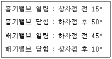
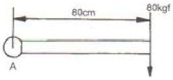
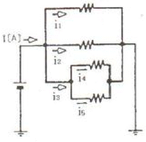
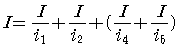
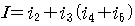
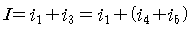
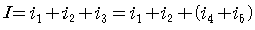

자동차정비기능사 (2010-03-28 기출문제)
1과목: 자동차공학
1. 자동차용 LPG 연료의 특성이 아닌 것은?
- 연소효율이 좋고, 엔진이 정숙하다.
- 엔진 수명이 길고, 오일의 오염이 적다.
- 대기 오염이 적고, 위생적이다.
- 옥탄가가 낮으므로 연소속도가 빠르다.
(정답률: 85%)

2. 공연비의 피드백 제어가 가능하도록 하는 주요 센서는?
- 공기흐름센서
- 대기압센서
- O2센서
- 스로틀포지션센서
(정답률: 74%)
3. 전자제어 가솔린 분사기관에서 흡입공기량을 계량하는 방식 중에서 흡기 다기관의 절대압력과 기관의 회전속도로부터 1 사이클 당 흡입공기량을 추정할 수 있는 방식은?
- 칼만와류 방식
- MAP센서 방식
- 베인식 방식
- 열선식
(정답률: 74%)
4. 윤활유의 역할이 아닌 것은?
- 밀봉 작용
- 냉각 작용
- 팽창 작용
- 방청 작용
(정답률: 83%)
5. 제작자동차 등의 안전기준에서 2점식 또는 3점식 안전띠의 골반부분 부착장치는 몇 kgf의 하중에 10초 이상 견뎌야 하는가?
- 1270kgf
- 2270kgf
- 3870kgf
- 5670kgf
(정답률: 73%)
6. 다음 중 냉각장치에서 과열의 원인이 아닌 것은?
- 벨트 장력 과대
- 냉각수의 부족
- 팬 벨트 장력 헐거움
- 냉각수 통로의 막힘
(정답률: 65%)
7. 디젤기관에서 냉각장치로 흡수되는 열은 연료 전 발열량의 약 몇 % 정도인가?
- 30 ~ 35
- 40 ~ 45
- 55 ~ 65
- 70 ~ 80
(정답률: 64%)
8. 전자 제어 엔진에서 스로틀 바디의 역할을 가장 적절하게 설명한 것은?
- 공연비 조절
- 공기량 조절
- 혼합기 조절
- 회전수 조절
(정답률: 62%)
9. 4행정 기관의 밸브 개폐시기가 다음과 같다. 흡기행정 기간은 몇 도인가?

- 180°
- 230°
- 235°
- 245°
(정답률: 62%)
10. 실린더 헤드를 떼어낼 때 볼트를 바르게 푸는 방법은?
- 중앙에서 바깥으로 향하여 대각선으로 푼다.
- 풀기 쉬운 곳부터 푼다.
- 바깥에서 안쪽으로 향하여 대각선으로 푼다.
- 실린더 보어를 먼저 제거하고 실린더헤드를 떼어낸다.
(정답률: 88%)
11. LPG 기관에서 연료가 기체 상태로 존재하는 부품은?
- LPG 용기
- 믹서
- 베이퍼라이져 연료입구
- 고압파이프
(정답률: 56%)
12. 디젤기관에서 행정의 길이가 300mm, 피스톤의 평균속도가 5m/s라면 크랭크축은 매 분당 몇 회전 하는가?
- 500rpm
- 1000rpm
- 1500rpm
- 2000rpm
(정답률: 30%)
13. 전자제어 기관에서 노킹센서의 고장으로 노킹이 발생되는 경우 엔진에 미치는 영향으로 옳은 것은?
- 오일이 내각된다.
- 가속 시 출력이 증가한다.
- 엔진 냉각수가 줄어든다.
- 엔진이 과열된다.
(정답률: 82%)
14. 고속 디젤기관의 사이클은?
- 오토 사이클
- 디젤 사이클
- 카르노 사이클
- 사바테 사이클
(정답률: 81%)
15. 활성탄 캐니스터(charocoal canister)는 무엇을 제어하기 위해 설치하는가?
- CO2 증발가스
- HC 증발가스
- NOx 증발가스
- CO 증발가스
(정답률: 78%)
16. 디젤기관과 비교한 가솔린 기관의 장점이라고 할 수 있는 것은?
- 기관의 단위 출력당 중량이 가볍다.
- 열효율이 높다.
- 대형화 할 수 있다.
- 연료 소비량이 적다.
(정답률: 63%)
17. 전자제어 연료 분사장치에서 인젝터의 상태를 점검하는 방법에 속하지 않는 것은?
- 분해하여 점검한다.
- 인젝터의 작동음을 듣는다.
- 인젝터의 작동시간을 측정한다.
- 인젝터의 분사량을 측정한다.
(정답률: 67%)
18. 실린더의 윗부분의 아래 부분보다 마멸이 큰 이유는?
- 오일이 상단까지 밀어주지 못하기 때문이다.
- 냉각의 영향을 받기 때문이다.
- 피스톤링의 호흡작용이 있기 때문이다.
- 압력이 작게 작용하기 때문이다.
(정답률: 73%)
19. TPS(Throttle Position Sensor)의 기능과 관계가 먼 것은?
- TPS는 스로틀 보디(Throttle body)의 밸브 축과 함께 회전한다.
- TPS는 배기량을 감지하는 회전식 가변저항이다.
- 스로틀 밸부의 회전에 따라 출력 전압이 변화한다.
- TPS의 결함이 있으면 변속 충격 또는 다른 고장이 발생한다.
(정답률: 66%)
20. 전자제어 기관에서 연료펌프가 작동되지 않을 때는?
- 점화 스위치가 ST 위치에 있을 때
- 점화 스위치가 ON 위치에 있고 엔진이 정지되어 있을 때
- 점화 스위치가 ON 위치에 있고 엔진이 규정 이상으로 회전될 때
- 점화 스위치가 ON 위치에 있고 공기흡입이 감지될 때
(정답률: 69%)
2과목: 자동차정비 및 안전기준
21. 그림에서 A점에 작용하는 토크는?

- 64mㆍkgf
- 80mㆍkgf
- 60mㆍkgf
- 640mㆍkgf
(정답률: 62%)
22. 디젤기관에서 연료분사 펌프의 조속기는 어떤 작용을 하는가?
- 분사시기 조정
- 분사량 조정
- 분사 압력 조정
- 착화성 조정
(정답률: 55%)
23. 다음 중 디젤 기관의 착화지연 기간에 대한 설명으로 맞는 것은?
- 착화 지연기간은 제어 연소기간과 같은 뜻이다.
- 착화 지연기간이 길어지면 디젤 노크가 발생한다.
- 착화 지연기간이 길어지면 후기 연소기간이 없어진다.
- 착화 지연기간이 연료의 성분과 관계가 없다.
(정답률: 80%)
24. 전자제어 현가장치에서 롤(roll)제어를 할 때 가장 직접적인 관계가 있는 것은?
- 차속 센서, 브레이크 스위치
- 차속 센서, 인히비터 스위치
- 차속 센서, 조향 휠 센서
- 차속 센서, 스로틀포지션 센서
(정답률: 61%)
25. 파워 스티어링에서 오일 압력 스위치의 역할은?
- 공연비 조절
- 점화시기 조절
- 공회전 속도 조절
- 연료펌프 구동 조절
(정답률: 43%)
26. 등속도 자재이음의 종류가 아닌 것은?
- 훅 조인트형(Hook Joint type)
- 트랙터형(Tractor type)
- 제파형(Rzeppa type)
- 버필드형(Birfield type)
(정답률: 48%)
27. 기관의 회전수가 2400rpm, 변속비는 1.5, 증감속비가 4.0일 때 링기어는 몇 회전하는가?
- 400rpm
- 600rpm
- 800rpm
- 1000rpm
(정답률: 43%)
28. ABS가 장착된 차량에서 휠 스피드 센서의 역할은?
- 휠의 회전속도를 감지하여 이를 전기적 신호로 바꾸어 ABS 컨트롤 유닛으로 보낸다.
- 휠의 회전속도를 감지하여 이를 기계적 신호로 바꾸어 ABS 컨트롤 유닛으로 보낸다.
- 휠의 회전속도를 감지하여 이를 전기적 신호로 바꾸어 계기판으로 보낸다.
- 휠의 회전속도를 감지하여 이를 기계적 신호로 바꾸어 계기판으로 보낸다.
(정답률: 67%)
29. 제동 배력장치 중에서 진공을 이용한 것이 아닌 것은?
- 하이드로 마스터
- 마스터 백
- 뉴 바이커
- 에어 마스터
(정답률: 40%)
30. 수동변속기에서 싱크로 메시 기구는 어떤 작용을 하는가?
- 가속 작용
- 감속 작용
- 동기 작용
- 배력 작용
(정답률: 63%)
31. 자동차로 길이 400m의 비탈길을 왕복하여 올라가는데 3분 내려오는데 1분이 걸렸다고 하면 왕복 평균 속도는?
- 10km/h
- 11km/h
- 12km/h
- 13km/h
(정답률: 56%)
32. 조향기어비가 15 : 1 인 조향기어에서 피트먼 암을 20° 회전시키기 위한 핸들의 회전 각도는?
- 30°
- 270°
- 300°
- 370°
(정답률: 68%)
33. 차륜 정렬 측정 및 조정을 해야 할 이유와 거리가 먼 것은?
- 브레이크의 제동력이 약할 때
- 현가장치를 분해, 조립 후에
- 핸들이 흔들리거나 조작이 불량할 때
- 충돌 사고로 인해 차체에 변형이 생겼을 때
(정답률: 69%)
34. 자동차의 진동현상에 대해서 바르게 설명된 것은?
- 바운싱 : 차체의 상하 운동
- 피칭 : 차체의 좌우 흔들림
- 롤링 : 차체의 앞뒤 흔들림
- 요잉 : 차체의 비틀림 진동하는 현상
(정답률: 66%)
35. 클러치페달을 밟을 때 무겁고, 자유간극이 없다면 나타나는 현상으로 거리가 먼 것은?
- 연료 소비량이 증대된다.
- 기관이 과냉된다.
- 주행 중 가속 페달을 밟아도 차가 가속되지 않는다.
- 등판 성능이 저하된다.
(정답률: 70%)
36. 자동변속기차량에서 중립과 주차위치에서만 시동이 걸리도록 해주는 부품은?
- 펄스제네레이터
- 유온센서
- 스로틀위치센서
- 인히비터 스위치
(정답률: 70%)
37. 자동변속기차량에서 토크컨번터 내에 있는 스테이터의 기능은?
- 터빈의 회전력을 증대시킨다.
- 바퀴의 회전력을 감소시킨다.
- 펌프의 회전력을 증대시킨다.
- 터빈의 회전력을 감소시킨다.
(정답률: 80%)
38. 현가장치에서 스프링에 대한 설명으로 틀린 것은?
- 스프링은 훅의 법칙에 따라 가해지는 힘에 의해 변형량은 비례한다.
- 스프링의 상수는 스프링의 세기를 표현한다.
- 스프링상수를 일정하게하고 하중을 증가시키면 진동수는 증가한다.
- 스프링의 진동수는 스프링 상수에 비례하고 하중에 반비례한다.
(정답률: 47%)
39. 브레이크장치에서 디스크 브레이크의 특징이 아닌 것은?
- 제동시 한쪽으로 쏠리는 현상이 적다.
- 패드 면적이 크기 때문에 높은 유압이 필요하다.
- 브레이크 페달의 행정이 일정하다.
- 수분에 대한 건조성이 빠르다.
(정답률: 63%)
40. 전자제어 자동변속기에서 변속단 결정에 가장 중요한 역할을 하는 센서는?
- 스로틀 포지션 센서
- 공기유량센서
- 레인센서
- 산소센서
(정답률: 83%)
3과목: 안전관리
41. 전기회로 중 그림과 같은 병렬 회로에 흐르는 전체전류 I를 계산하는 식은?





(정답률: 50%)
42. 에어컨(air conditioner) 시스템에서 냉매라인을 고압라인과 저압라인으로 나누었을 때 저압라인의 부품으로 알맞은 것은?
- 응축기(condenser)
- 리시버 드라이어(receiver drier)
- 어큐뮬레이터(accoumulator)
- 송풍기(blower moter)
(정답률: 55%)
43. 3300V 를 110V로 전압을 강하시킬 때 변압기의 권선비는?
- 10 : 1
- 11 : 1
- 30 : 1
- 33 : 1
(정답률: 60%)
44. 바이메탈을 이용한 것으로 과도한 전류가 흐르면 바이메탈이 열을 받아 휨으로써 접점이 떨어지고 온도가 낮아지면 접촉부가 붙게 되어 전류가 흐르게 하는 것은?
- 퓨즈
- 퓨즈블 링크
- 서키트 브레이커
- 전기 브레이크
(정답률: 40%)
45. D.C 발전기의 계자코일과 계자철심에 상당하며 자속을 만드는 것을 A.C 발전기에서는 무엇이라 하는가?
- 정류기
- 전기자
- 로터
- 스테이터
(정답률: 55%)
46. 납산축전지 격리판의 필요조건으로 틀린 것은?
- 비전도성일 것
- 다공성일 것
- 기계적 강도가 있을 것
- 전해액의 확산이 차단될 것
(정답률: 49%)
47. 반도체에서 사이리스터의 구성부가 아닌 것은?
- 캐소드
- 게이트
- 애노드
- 컬렉터
(정답률: 67%)
48. 배선에 있어서 기호와 색의 연결이 틀린 것은?
- Gr : 보라
- G : 녹색
- R : 적색
- y : 노랑
(정답률: 87%)
49. 자동차용 납산배터리의 기능으로 틀린 것은?
- 기관시동에 필요한 전기에너지를 공급한다.
- 발전기 고장시에는 자동차 전기장치에 전기에너지를 공급한다.
- 발전기의 출력과 부하사이의 시간적 불균형을 조절한다.
- 시동 후에도 자동차 전기장치에 전기에너지를 공급한다.
(정답률: 58%)
50. 자동차의 IMS(Intergrated Memory System)에 대한 설명으로 옳은 것은?
- 자동차의 도난을 예방하기 위한 시스템이다.
- 자동차의 편의 장치로서 장거리 운행시 자동운행시스템을 말한다.
- 배터리 교환주기를 알려주는 시스템이다.
- 1회의 스위치 조작으로 운전자가 설정해둔 시트위로 재생시킬수 있는 기능을 가지고 있는 스트제어 시스템을 말한다.
(정답률: 73%)
51. 유류 화재시 불을 끄기 위한 방법으로 틀린 것은?(오류 신고가 접수된 문제입니다. 반드시 정답과 해설을 확인하시기 바랍니다.)
- 물을 사용한다.
- 소화탄을 사용한다.
- 모래를 사용한다.
- 탄산(CO2)가스를 사용한다.
(정답률: 76%)
52. 헤드 볼트를 조일 때 토크 헨치를 사용하는 이유로 가장 옳은 것은?
- 신속하게 조이기 위해서
- 작업상 편리하기 위해서
- 강하게 조이기 위해서
- 규정 값으로 조이기 위해서
(정답률: 87%)
53. 전기로 작동되는 기계운전 중 기계에서 이상한 소음, 진동, 냄새 등이 날 경우 가장 먼저 취해야 할 조치는?
- 즉시 전원을 내린다.
- 상급자에게 보고한다.
- 기계를 가동하면서 고장여부를 파악한다.
- 기계 수리공이 올 때까지 기다린다.
(정답률: 86%)
54. 자동차정비 작업시 압축공기를 이용한 공구를 사용할 필요가 없는 작업은?
- 타이어 교환 작업
- 클러치 탈거 작업
- 축전지 단자 케이블 연결
- 엔진 분해, 조립
(정답률: 77%)
55. 산업체에서 안전을 지킴으로서 얻을 수 있는 이점으로 틀린 것은?
- 직장의 신뢰도를 높여준다.
- 상하 동료 간에 인간관계가 개선된다.
- 기업의 투자 경비가 늘어난다.
- 회사 내 규율과 안전수칙이 준수되어 질서유지가 실현된다.
(정답률: 83%)
56. 크레인으로 중량물을 달아 올리려고 할 때 적합하지 않은 것은?
- 수직으로 달아 올린다.
- 제한용량 이상을 달지 않는다.
- 옆으로 달아 올린다.
- 신호에 따라 움직인다.
(정답률: 84%)
57. 연삭기 중 안전커버의 노출각도가 가장 큰 것은?
- 평면연삭기
- 탁상연삭기
- 휴대용연삭기
- 공구연삭기
(정답률: 52%)
58. 기관의 크랭크축 분해 정비시 주의사항으로 부적합한 것은?
- 축받이 캡을 탈거 후 조립시에는 제자리 방향으로 끼워야 한다.
- 뒤 축받이 캡에는 오일 실이 있으므로 주의를 요구한다.
- 스러스트 판이 있을 때에는 변형이나 손상이 없도록 한다.
- 분해시에는 반드시 규정된 토크 렌치를 사용해야 한다.
(정답률: 54%)
59. 제동력시험기 사용시 주의할 사항으로 틀린 것은?
- 타이어 트레드의 표면에 습기를 제거한다.
- 롤러 표면은 항상 그리스로 충분히 윤활 시킨다.
- 브레이크 페달을 확실시 밟은 상태에서 측정한다.
- 시험 중 타이어와 가이드롤러와의 접촉이 없도록 한다.
(정답률: 76%)
60. 납산 축전지의 전해액이 흘렀을 때 중화용액으로 가장 알맞은 것은?
- 중탄산소다
- 황산
- 증류수
- 수돗물
(정답률: 62%)